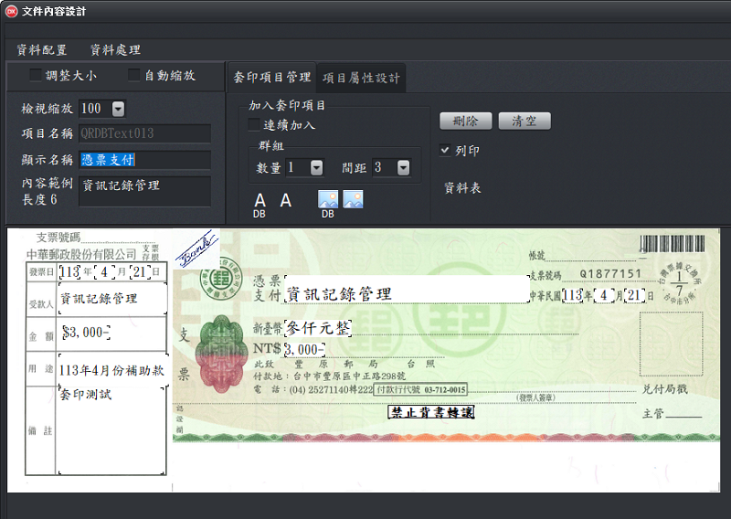

文件內容設計
前言：本軟體與其它列印或資料收集軟體最大的差異在於可以視覺化及完全客制化的設計。列印內容、記錄的位置都以視覺化方式呈現，可以用滑鼠直接移動；而內容的項目及多寡，可以由使用者自由發揮。
套印項目是指在文件上面加入要列印（收集資料）的字串或圖案。
主要功能：
-
公用區：
- 指定套印項目的大小是否為自動縮放，也可以修改顯示名稱、內容範例。
- 備註：設計支票類型文件時，可以將「平行線」的顯示名稱設定為「CrossedCheck」，「禁止背書轉讓」顯示名稱設定為「Nonnegotiable」，系統就能提供是否套印「平行線」及「禁止背書轉讓」的功能選項，讓使用者不需改變「文件內容設計」，就能決定是否套印「平行線」及「禁止背書轉讓」。
-
套印項目管理：
管理文件中的套印項目，可以將字串類型或圖案類型的項目進行新增或刪除。
- 字串類型項目：圖案之外的內容，全部歸類為字串類型，因此字串包含了文字、數字類型的套印資料。
- 圖案類型項目：可以加入圖檔。
-
項目屬性設計：
對字串類的套印項目進行字體大小、顏色、外框等設定，或對圖案類的套印項目指定圖案來源。
支援功能：
-
資料配置：
對使用者輸入（或匯入）的資料進行配置，例如將日期分配給 3 個套印項目（年、月、日）。
-
資料處理：
對使用者輸入（或匯入）的資料進行處理，例如將日期切割為年、月、日，或將「1000」轉為「新臺幣壹仟元整」。

套印內容設定視窗